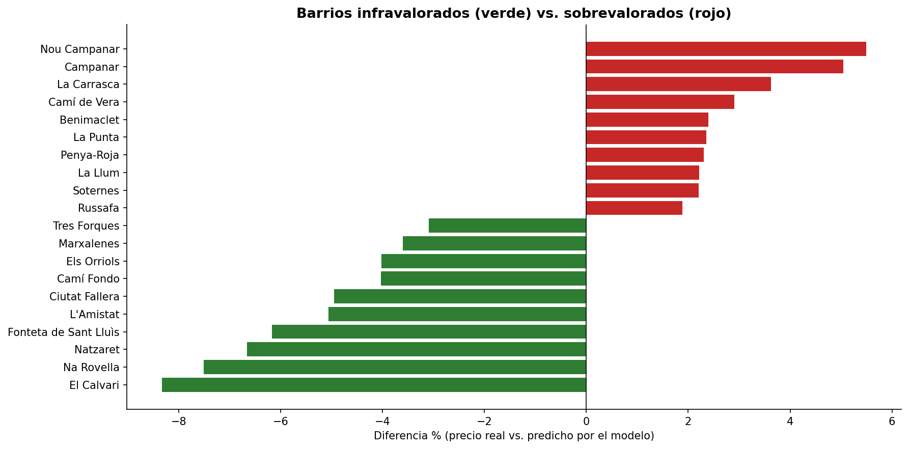

Caso · Python · geopandas · LightGBM · scikit-learn · folium · Power BI
Qué barrios de Valencia cuestan más de lo que deberían
Entrené un modelo que estima cuánto debería costar cada vivienda según sus características y lo comparé con el precio real, barrio por barrio.
La pregunta
¿Qué barrios cobran más, o menos, de lo que justifican sus viviendas?
Un barrio caro no es necesariamente una mala compra, ni uno barato una oportunidad. Lo que le interesa a un inversor es la diferencia entre lo que se paga y lo que la vivienda vale por sus características.
Los datos
33.622 anuncios reales de compra con coordenadas GPS, del dataset académico
idealista18. Son precios de 2018: hoy son más altos, así que sirven para
comparar barrios entre sí, no como precio actual.
El enfoque
- Un modelo LightGBM predice el precio por m² de cada vivienda a partir de superficie, habitaciones, baños, antigüedad, distancia al centro y distancia al metro.
- Error medio del modelo: 244 €/m² (14,3% de error relativo).
- Para cada barrio, comparo el precio real con el que predice el modelo: si es mayor, el barrio está sobrevalorado; si es menor, infravalorado.
Lo que encontré
-
+5,5%
Nou Campanar, el barrio más sobrevalorado
Le siguen Campanar (+5,0%) y La Carrasca (+3,6%): el precio real supera lo que justifican sus viviendas.
-
−8,3%
El Calvari, el barrio más infravalorado
Le siguen Na Rovella (−7,5%) y Natzaret (−6,7%): se paga menos de lo que el modelo espera para esas viviendas.

Una aclaración sobre la rentabilidad
El mapa interactivo colorea los barrios por rentabilidad de alquiler, pero esa rentabilidad es una estimación: no pude acceder a datos públicos de alquiler por barrio, así que apliqué la rentabilidad media de Valencia (~5,9%) ajustada por precio. Por eso no la presento como hallazgo: el resultado del análisis es la sobre e infravaloración, que sí sale de datos reales.
Qué haría distinto
Con datos reales de alquiler por barrio, calcularía la rentabilidad observada en lugar de estimarla y la cruzaría con la sobrevaloración. Y repetiría el modelo con precios recientes para ver si el ranking de barrios se mantiene.